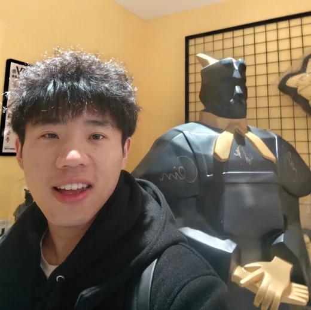
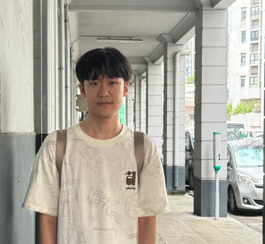
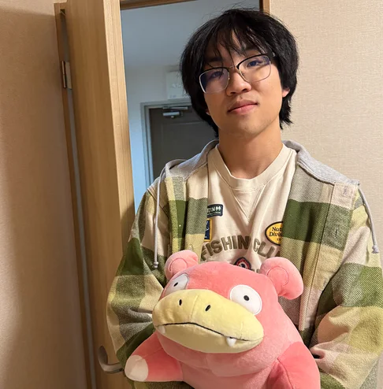
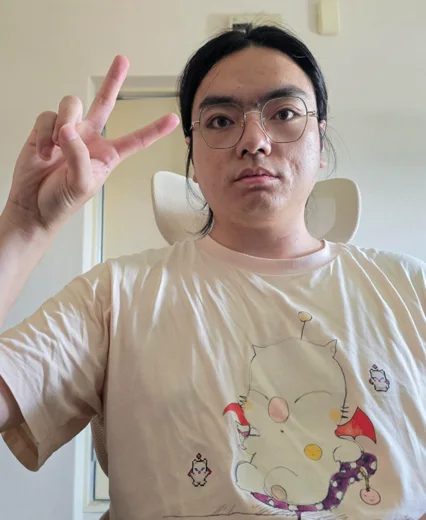

王継者
Data-driven decision-making
A research community connecting mathematical ideas, computational methods, and practical questions.
Associate Professor · Principal Investigator
Based at TUAT, Xun Shen studies chance-constrained optimization, statistical machine learning, and safe reinforcement learning. His background in engineering and statistical sciences connects mathematical theory with problems in health, mobility, and energy.
PhD in Engineering · PhD in Statistical Sciences
Member information as of October 2026. The affiliations of co-supervised students at Institute of Science Tokyo were confirmed in November 2026.

Data-driven decision-making

Time-series prediction

Time-series prediction

Learning & decision-making
Learning & decision-making
Learning & decision-making

Doctoral student · Enrolled October 2026

Data-driven decision-making

Learning & decision-making

Master’s program

Time-series prediction
Acoustic distance estimation
Data-driven decision-making
Explore research opportunities and conversations with Eigen Lab.